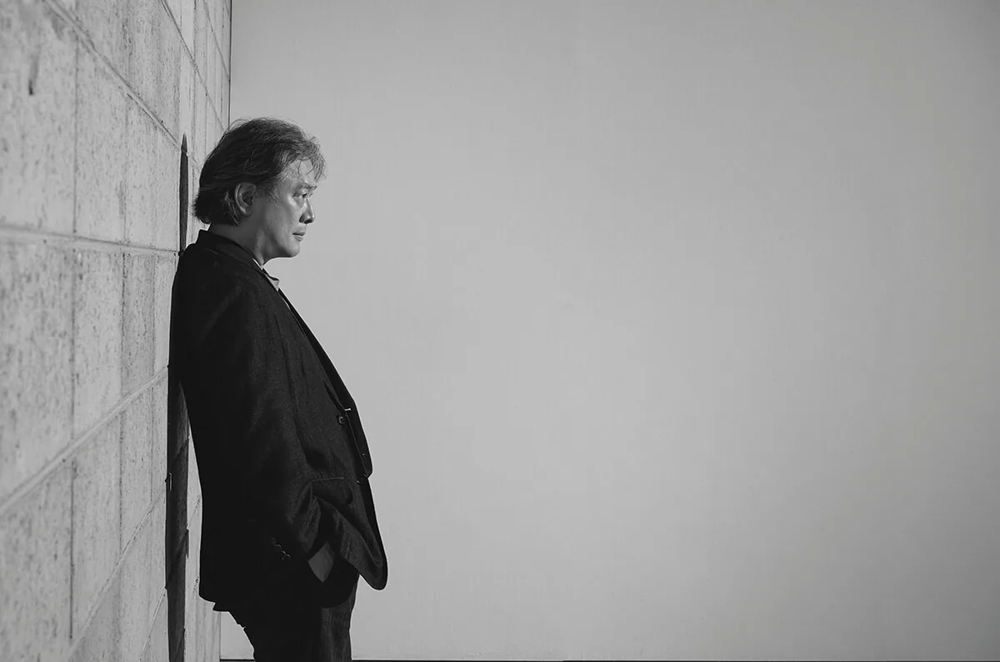
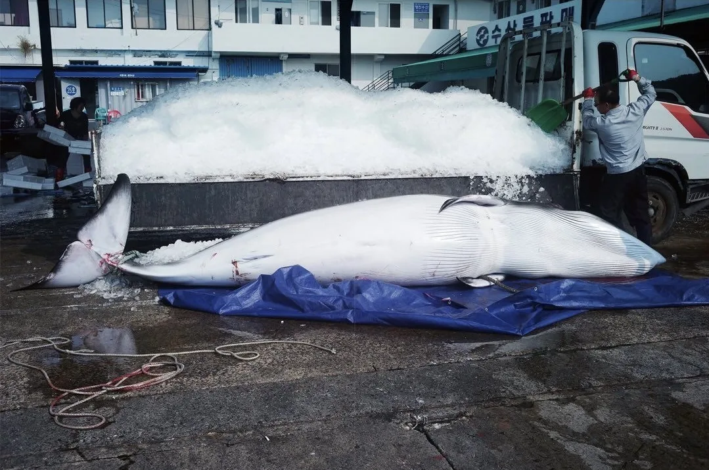
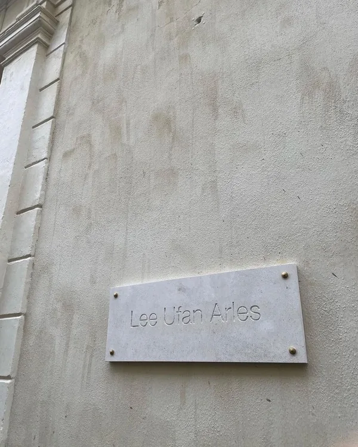

"치밀한 미장센으로 유명한 감독이, 사진에서는 정반대의 길을 간다. 아무것도 연출하지 않는 것."
박찬욱이 사진가로서 유럽에 처음 이름을 걸었다. 전시 제목은 《Park Chan-wook, par un matin calme》. '고요한 아침에'라는 뜻의 프랑스어다. 장소는 프랑스 아를의 이우환 미술관. 세계에서 가장 큰 사진축제인 아를 국제사진축제(Les Rencontres d'Arles)의 공식 연계 프로그램으로 7월 초에 문을 열어 10월 4일까지 이어진다. 올해로 140년이 된 한불 수교를 기념하는 자리이기도 하다. 부산에 문을 연 랄프 깁슨 미술관의 개관전과 같은 맥락 위에 있는 셈이다.
감독 박찬욱과 사진가 박찬욱

사실 그의 사진은 취미라고 부르기 어렵다. 대학에서 철학을 공부하던 시절부터 45년 넘게 카메라를 놓지 않았고, 인스타그램 @pcwpcwpic 에는 영화 홍보 대신 사진 작업이 쌓인다. 갤러리 데뷔도 이미 치렀다. 2022년 가을 국제갤러리 부산에서 열린 첫 개인전 《너의 표정》이다. 같은 이름의 사진집에 실린 작품 가운데 30여 점을 골라 걸었다. 이번 아를 전시는 그 다음 걸음이자 유럽 무대의 첫 걸음이다.
연출을 내려놓는 연출가

영화에서 박찬욱은 화면 안의 모든 것을 통제하는 사람이다. 그런데 사진 앞에서는 반대가 된다. 의도적인 연출을 덜어내고, 눈길을 붙잡은 일상의 순간을 그대로 담는다. 돌과 나무 같은 자연, 벽에 걸린 노란 케이블 같은 산업의 흔적. 날씨와 빛에 따라 매번 달라지는 대상 앞에서 그 순간에만 드러나는 아름다움과 기이함, 그리고 낯섦을 붙잡는 식이다.
촬영장에서 찍은 배우들의 모습도 이번 전시에 걸린다. 캐릭터에 들어가 있는 긴장된 얼굴이 아니라 테이크와 테이크 사이의 표정들이다. 박찬욱은 그들 역시 자연스러운 풍경의 일부라고 말한다. 출품작은 르 피가로의 미술비평가 발레리 뒤퐁셸과 함께 디지털 이후의 작업에서 골랐다.
이우환의 집에서

전시장이 된 이우환 미술관도 이야기를 보탠다. 16세기에서 18세기에 걸쳐 지어진 저택 오텔 베르농을 안도 다다오가 손봐 2022년에 문을 연 곳으로, 이우환의 돌과 철이 놓인 고요한 공간이다. 여백을 다루는 화가의 집에 연출을 덜어낸 감독의 사진이 걸렸다. 고요한 아침이라는 제목과 이보다 잘 어울리는 장소를 찾기도 어렵다.
정리
- 전시 Park Chan-wook, par un matin calme (고요한 아침에)
- 장소 이우환 미술관 Lee Ufan Arles (프랑스 아를)
- 기간 2026.7.6 – 10.4
- 성격 유럽 첫 개인전 · 아를 국제사진축제 공식 연계 · 한불 수교 140주년
- 큐레이션 발레리 뒤퐁셸 (르 피가로) · 쥘리에트 비뇽
- 협력 국제갤러리
출처는 국제갤러리 공식 채널과 아를 국제사진축제(Les Rencontres d'Arles), 이우환 미술관 아를 공식 자료다. 관람 시간과 휴관일은 미술관 공식 채널에서 확인이 필요하다. 정보 변경이 확인되면 본 글에 보강할 예정이다.